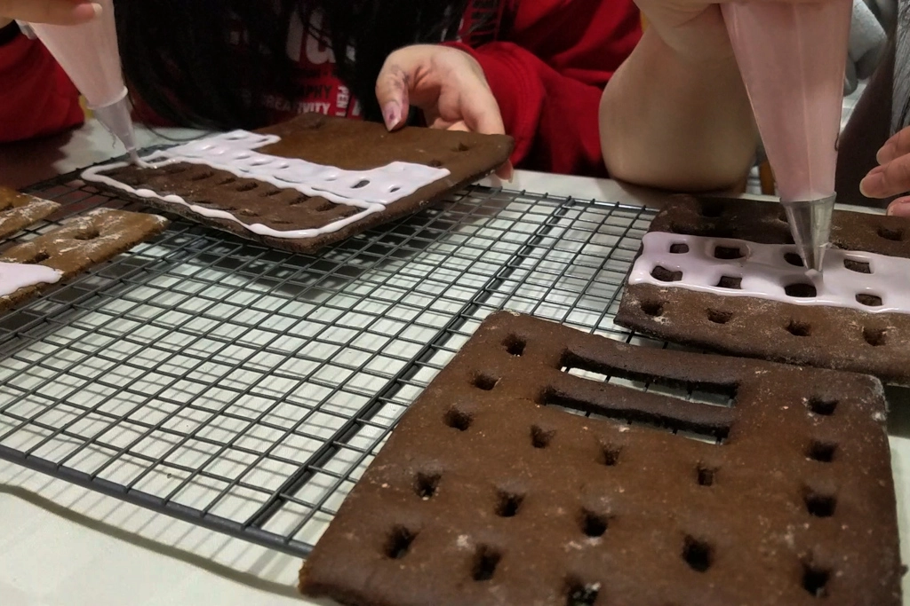

7 Days of Christmas - The Grand Budapest Hotel
Dec 25 - Written by Bonnie and Emily
Welcome to our final video in our Seven Days of Christmas Series -- that means that today is Christmas!! Christmas means many things but one of those things is cookies, more specifically, gingerbread cookies and houses. We can’t go a holiday season without making some gingerbread.
With that being said, we had to take a shot at making our very own gingerbread house but of course knowing us, this year we added a twist! Instead of making a typical gingerbread house, we opted for something grander, a piece from one of our favorite films, The Grand Budapest Hotel by Wes Anderson.
We knew going into this that it would require some planning so prior to safely meeting up in person to construct this hotel, we split up the tasks and got to work. With Bonnie making the template and Emily making the gingerbread dough, things were off to a good start. Although we did hit a few bumps in the road as we wanted to be ambitious with our template and gingerbread house and had to find a good balance for just the right amount of detail with the amount of dough and scale we were working at. Nevertheless, we were ambitious and opted to go a little more detailed since we’ve already committed ourselves to this grand gingerbread project.
Once we had our template and could begin cutting out all the pieces, we attempted to create mini cookie cutters by recycling a clean soda can. These cutters were a hassle to create as they were so much smaller than we initially thought and we didn’t have the right tools to shape it into the desired shape. However, we were able to create some decent mini cookie cutters to use and got to work at measuring and cutting out all the dough.
After cutting out the first two major pieces and realizing how much dough we really needed for the pieces, we figured we could actually scale up the whole model. Since we had just spent so much time cutting out all of the template pieces, we weren’t about to waste time doing that again so we decided it was best to use the current template and scale it up from there. Overall, this was a solid plan and worked out quite well; however, it just took us sooo much longer than we thought it would to cut out every individual piece since the Grand Budapest hotel was a very complex structure. From the main structure to all the individual window frames, there were a lot of elements to this.
Countless hours later, we finally had all our pieces cut and baked. Since this wasn’t a traditional house, we weren’t quite sure how long to bake each batch for since our pieces varied so much in size. That being said, we may have overbaked our main structure but it was okay because it provided the extra sturdiness we needed. Now that everything has been baked, we moved onto icing all the pieces to match the colors of the hotel.
If you thought cutting out all of the pieces took a very long time, icing all of the cookies was just as time consuming. Luckily we were able to ice a majority of the cookies at night which allowed them ample time to set before we constructed our hotel.
Since our structure was still on the smaller side, there wasn’t much we could do about all the small details of the hotel, like all of the details on the window frames. But we were able to still work with different shades of icing colors to still create the infamous pink shades that are found on the walls of the hotel.
Although the icing process for each individual piece may have taken longer than expected, it was worth it when we saw all of the iced pieces laid out on the table made for quite the spectacle.
Once we had everything iced, we could finally start building! At this point, we were both quite tired but also very excited to finally see everything come together. Before we could actually put up the walls, we had to glue down all of our window frames to the main pieces, otherwise, it would have been much more difficult competing with gravity. After gluing around 55 or so window frames, we could now start building the walls and putting all the pieces together.
With our thicker royal icing, we got to work at putting up the walls only to realize the icing was going to take time to dry and we couldn't sit there all day holding up those walls. So, taking a trick from our prior gingerbread house making, we grabbed some jars and cups for temporary support.
Things went well for a while as the base stood on its own without support; however, after adding some more pieces to the base, things began getting a little too heavy. There were definitely a few trial and errors before we were able to successfully get our gingerbread hotel stable.
As the walls started to shift, the supports had to be replaced to help keep the structure from tipping over. The greatest challenge we faced in putting together all of the pieces surely had to be the roof. With the added weight of the roof pieces and the icing not being fully dry, walls began to fall and roof pieces started coming down.
Seeing as this approach wasn’t going to work, we ended up taking out some extra decorations that were going on top of the structure to keep it stable. After taking out a few pieces, we still needed some extra support to make sure the structure would stay intact so we grabbed some wooden chopsticks to anchor down the pieces that created our new gingerbread movie set-- almost identical to the real one!
Now that the walls were up, the roof still standing and not caving in, and the needed support was in place, it was time for final touches! We used some melted chocolate to get all the minute details that we wanted to include in our gingerbread. Except, we forgot how warm our fingers were and how fragile chocolate could be! But we weren’t about to give up now! We knew we had to put up the infamous Grand Budapest sign and so with some tinkering and shifting we got our chocolate sign on to our hotel! It was definitely an adventurous journey to the gingerbread Grand Budapest hotel that we have now.
Even though there were quite a few mishaps along the way, the final product was worth all the hours of hard work. The resemblance to the real structure was so satisfying to see and was such a great experience tackling one of our largest baking challenges yet and if you haven’t seen the film The Grand Budapest Hotel go check it out and let us know what you think of our gingerbread version!
We hope you enjoyed following us on this journey and that it inspired you to create your own gingerbread structure.